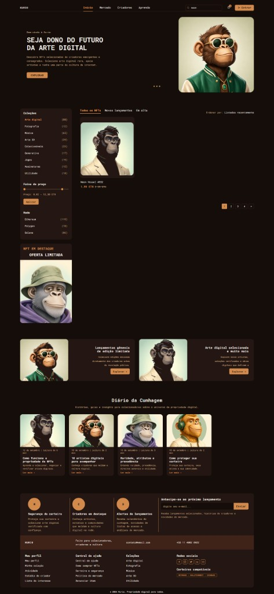
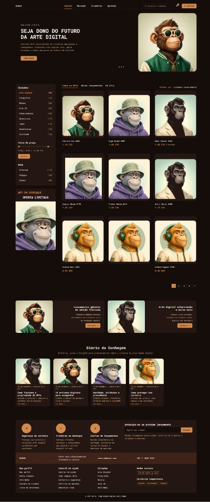
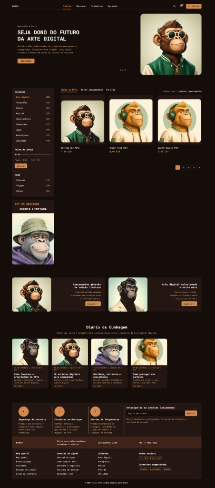
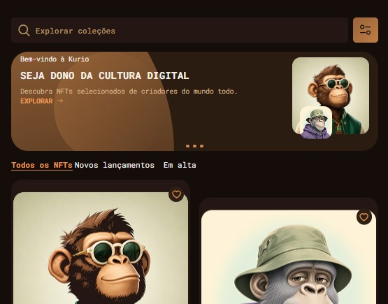

0
Total de Casos
0
Aprovados
0
Reprovados
0
Bloqueados
0%
Taxa de Aprovação
Progresso geral de aprovação
0%
0%
🧪
Casos de Teste por Fluxo
FL-01
Catálogo e histórico
▼
| # | Caso de Teste | Pré-condição | Resultado Esperado | Status |
|---|---|---|---|---|
| TC-01 | Grade inicial em 1440 mostra as oito peças na ordem da semente, com hero, oferta, artigos e rodapé. | Mock ligado. Sem q. Largura 1440. |
Ordem: Emerald Ape #042, Sage Nomad #009, Neon Vessel #552, Cosmic Bloom #118, Violet Nomad #314, Ivory Baron #088, Golden Beat #207, Golden Signal #160. Neon Vessel mostra 1.99, 2.29 e RARO. |
Aprovado |
| TC-02 | A busca q recorta a grade, sobrevive ao refresh e, ao ser apagada, devolve as oito peças. |
/ aberto. Mock ligado. |
/?q=neon e /?q=NEON deixam só Neon Vessel #552. nomad, 552 e inexistente esvaziam a grade com Nenhuma peça com esse nome. Apagar a busca tira q do endereço. |
Aprovado |
| TC-03 | O histórico preserva a busca: o card abre o detalhe com q, o voltar reabre a grade recortada, e buscar a partir do carrinho cria uma entrada nova. |
Grade com q=neon. Em outro passo, a pessoa está em /carrinho. |
O card abre /nfts/neon-vessel-552 e preserva q. Voltar reabre a grade recortada. Sem q, voltar reabre /. Buscar no carrinho empurra uma entrada; o voltar do navegador reabre o carrinho. |
Aprovado |
| TC-04 | Aba, coleção, rede, ordenação e página permanecem visuais. A faixa de preço recorta a grade ao aplicar. | Grade com as oito peças. Mock ligado. Desktop com a barra lateral visível. | Coleção, rede, aba, ordenação e paginação não alteram a lista nem o endereço. Ajustar os limites e tocar Aplicar mostra só peças com preço dentro do intervalo, sem gravar parâmetro novo na URL. Faixa vazia mostra Nenhuma peça nessa faixa de preço. |
Aprovado |
| TC-05 | No desktop a lupa abre o campo; no mobile, Explorar coleções grava q. |
Larguras 1440 e 390. Mock ligado. | Em 1440, com q o campo já está aberto; sem q, a lupa abre o campo. Em 390, Explorar coleções grava q. |
Aprovado |
📸 Evidências Visuais

TC-01 — Grade inicial em 1440 ✅

TC-02 — Busca neon ✅

TC-03 — Histórico e busca ✅

TC-04 — Faixa de preço ✅

TC-05 — Explorar coleções ✅
Observações:
TC-01 a TC-05 aprovados em 27/11/2026, mock ligado. TC-01: a grade em 1440 mostra as oito peças na ordem da semente, com hero, oferta, artigos e rodapé. Neon Vessel mostra 1.99 ETH e o preço de comparação riscado. A marca RARO do card não aparece nesta largura: o selo fica oculto no desktop e entra no card abaixo do breakpoint, além do detalhe da peça. TC-02: o campo do topo está aberto com o texto neon e a grade fica só com Neon Vessel #552. Esta captura não mostra a variante NEON, a grade vazia de nomad, 552 e inexistente, nem o apagar da busca. TC-03: o card abre o detalhe com
q preservado, o voltar reabre a grade recortada, e a busca a partir do carrinho cria entrada nova no histórico com o voltar do navegador devolvendo ao carrinho. A evidência anexada cobre um passo desse fluxo; o executor confirmou o caso inteiro. TC-04: faixa de preço aplicada recorta a grade conforme os limites; aba, coleção, rede, ordenação e paginação seguem só visuais, sem parâmetro novo na URL. A spec formal da fase 3 ainda descreve a faixa como visual; o mapa manual e o código foram alinhados nesta homologação. Lacuna do enunciado: ordenação e paginação na URL. TC-05: no mobile o campo Explorar coleções está no topo. Esta captura não mostra a lupa do desktop nem o texto gravado em q. O executor confirmou o caso inteiro. FL-01 fechado. Próximo: TC-06 no FL-02.
FL-02
Detalhe inexistente
▼
| # | Caso de Teste | Pré-condição | Resultado Esperado | Status |
|---|---|---|---|---|
| TC-06 | O detalhe de uma peça da semente abre direto, sem passar pela grade. | Mock ligado. Acesso a /nfts/neon-vessel-552. |
A página mostra imagem, nome, 1.99, 2.29 e RARO. A casca continua. |
Pendente |
| TC-07 | Identificador ausente não desenha uma peça. | Acesso a /nfts/nao-existe. |
A frase é NFT não encontrado. Não aparece preço nem nome de outra peça. |
Pendente |
| TC-08 | Com a simulação desligada, o detalhe e a grade mostram a frase de falha. | VITE_ENABLE_MOCK=false. |
A grade mostra Não foi possível carregar o catálogo. O detalhe mostra Não foi possível carregar a peça. O restante do início continua. |
Pendente |
📸 Evidências Visuais
📷 Screenshots serão adicionados após execução dos testes
Observações: Testes pendentes de execução.
FL-03
Conta e troca de usuário
▼
| # | Caso de Teste | Pré-condição | Resultado Esperado | Status |
|---|---|---|---|---|
| TC-09 | No desktop, Entrar abre o painel sobre a página atual. A aba, o X e Esc trocam ou fecham. | Largura 1440. Sem sessão. | O endereço fica conta=entrar, sem película escura. /entrar e /cadastro viram /?conta=entrar e /?conta=cadastro. X e Esc tiram conta. |
Pendente |
| TC-10 | Ada entra com a credencial da semente. Senha errada não abre a sessão. | Sem sessão. Ada é ada@kurio.test / kurio. |
A senha certa abre a sessão e o topo passa a Sair. Senha errada mostra E-mail ou senha não conferem. |
Pendente |
| TC-11 | Cadastro de e-mail novo abre a sessão. E-mail já usado, senhas diferentes e nome vazio não entram na conta da Ada. | Sem sessão. Bruno já usa bruno@kurio.test. |
Conta nova entra. E-mail repetido mostra Este e-mail já tem conta. Senhas diferentes mostram As senhas não conferem. Nome vazio mostra Informe nome, e-mail e senha. |
Pendente |
| TC-12 | Trocar de Ada para Bruno isola carrinho, recibo e perfil. Sair encerra a sessão. | Ada logada. Bruno é bruno@kurio.test / kurio. |
Sair no topo e em /perfil volta o topo para Entrar. Página privada reabre a entrada. O pedido ped-bruno-1 não abre na sessão da Ada, e o dado da Ada não aparece no Bruno. |
Pendente |
| TC-13 | A guarda devolve ao caminho válido. Retorno externo cai em /. Recarregar perde a sessão. |
Sem sessão. Rotas /perfil, /carteiras, /pagamento e /pedidos/ped-9. |
A entrada abre e, depois do sucesso, volta ao caminho pedido. retorno com origem externa, // ou a própria entrada cai em /. Sem retorno, o desktop fica na página de trás e o mobile vai para /. Recarregar perde a sessão, porque a loja viva nasce de novo. |
Pendente |
| TC-14 | Abaixo de 1440 a entrada é tela cheia. Links fora de escopo não navegam. Sem mock, a guarda não abre a página privada. | Largura 390. Depois, VITE_ENABLE_MOCK=false. |
/entrar e /cadastro ficam sem cabeçalho, sem mercado e sem o raio 40. Esqueceu a senha, Google e Facebook continuam visíveis e o clique não navega. Sem mock, o formulário mostra Não foi possível carregar a sessão. |
Pendente |
📸 Evidências Visuais
📷 Screenshots serão adicionados após execução dos testes
Observações:
Testes pendentes de execução. Lacuna do enunciado: a sessão não volta no refresh. A spec da fase 4 registra que recarregar a página perde a sessão (TC-13).
FL-04
Favoritos com falha
▼
| # | Caso de Teste | Pré-condição | Resultado Esperado | Status |
|---|---|---|---|---|
| TC-15 | O coração do card alterna o salvo local e não abre a peça. | Grade com Neon Vessel #552. Coração livre. | O botão alterna entre Salvar Neon Vessel #552 e Remover Neon Vessel #552 dos favoritos. O endereço não muda. q, se houver, permanece. |
Pendente |
| TC-16 | Trocar de tela esquece o coração. Não há pedido à loja. | Coração marcado no card. A pessoa abre o detalhe e volta. | O coração nasce livre de novo. A rede não recebe gravação de favorito. | Pendente |
| TC-17 | Falha do catálogo não oferece coração para desfazer. | Leitura de /api/nfts em falha, ou mock desligado. |
A grade mostra Não foi possível carregar o catálogo. Não há coração persistido nem rollback, porque o salvo não foi gravado. |
Pendente |
📸 Evidências Visuais
📷 Screenshots serão adicionados após execução dos testes
Observações:
Testes pendentes de execução. Lacuna do enunciado: favorito autenticado, otimista, com rollback quando a gravação falha. A spec da fase 3 deixa o coração só no card, sem sessão e sem pedido. A semente ainda guarda favoritos da Ada e do Bruno na loja, e a tela não os lê.
FL-05
Carrinho
▼
| # | Caso de Teste | Pré-condição | Resultado Esperado | Status |
|---|---|---|---|---|
| TC-18 | O visitante inclui uma peça, vê o selo e a cotação, e o recarregar mantém o rascunho desta aba. | Sem sessão. Peça emerald-ape-042. |
Incluir no carrinho não troca de página. O selo passa a 1. /carrinho mostra a linha, subtotal 1.19 ETH, taxa 0.016 ETH e total 1.206 ETH. Recarregar a aba mantém. Outra aba abre vazio. |
Pendente |
| TC-19 | Ada entra com o rascunho e a quantidade da mesma peça soma. Sair deixa o visitante vazio e a loja da Ada intacta. | Rascunho com Sage quantidade 2 e Emerald quantidade 1. Ada já tem Sage quantidade 1 na semente. | Depois da entrada, a loja fica Sage quantidade 3 e Emerald quantidade 1, total 6.276 ETH, selo 4. O rascunho esvazia. Sair mostra Entrar e Seu carrinho está vazio. Entrar de novo devolve o carrinho da Ada. |
Pendente |
| TC-20 | Carrinho vazio não segue para o pagamento. | /carrinho sem linhas. |
A frase é Seu carrinho está vazio. Subtotal, taxa e total são 0.00 ETH. Desconto (-) 00.00. Conectar e finalizar permanece em /carrinho. |
Pendente |
| TC-21 | Com linha, Conectar e finalizar vai para /pagamento. Sem sessão, a guarda pede a entrada antes. |
Carrinho com ao menos uma linha. | Com sessão, o endereço vai para /pagamento. Sem sessão, a entrada abre e, depois do sucesso, a fusão acontece antes do pagamento. |
Pendente |
| TC-22 | Cupom e atalhos fora de escopo não navegam. O corpo muda entre 1440 e a coluna estreita. | Carrinho com linha. Larguras 1440, 768 e 390. | Aplicar um código deixa (-) 00.00 e não muda o endereço. Em 1440 aparecem tabela, recomendações e rodapé. Abaixo de 1440, inclusive 768 e 390, a coluna tem margem 28 e a barra de baixo não aparece. |
Pendente |
📸 Evidências Visuais
📷 Screenshots serão adicionados após execução dos testes
Observações:
Testes pendentes de execução. Lacuna do enunciado: cupom inválido ou expirado com desconto vindo da cotação. Nesta prova o desconto permanece
(-) 00.00. A tela não soma ETH por conta própria. Falha da cotação mostra Não foi possível calcular o total. e deixa a coluna de total sem número.
FL-06
Compra até o recibo
▼
| # | Caso de Teste | Pré-condição | Resultado Esperado | Status |
|---|---|---|---|---|
| TC-23 | Ada vê o recibo da semente, sem cabeçalho. | Sessão da Ada. Endereço /pedidos/ped-ada-1. Largura 1440. |
Ivory Baron #088, quantidade 1, taxa 0.00 ETH, total 1.79 ETH, data 29 Jul, 2026, carteira MetaMask e transação visível 0xADA1…A1E1. O modal não tem cabeçalho da loja. |
Pendente |
| TC-24 | O × volta ao início. Ver no Etherscan não navega. |
Recibo da Ada aberto. | O × vai para / e o cabeçalho volta. Ver no Etherscan não muda o endereço e não mostra sucesso. O fundo não fecha o modal. |
Pendente |
| TC-25 | O pedido do Bruno não abre na sessão da Ada. Sem sessão, a guarda volta ao pedido depois da entrada. | Ada logada para o pedido alheio. Visitante para /pedidos/ped-ada-1. |
/pedidos/ped-bruno-1 na Ada mostra Pedido não encontrado. Golden Signal não aparece. Sem sessão, a entrada abre e o sucesso volta ao pedido. |
Pendente |
| TC-26 | O caminho do carrinho até o pagamento não cria um pedido novo pela tela. | Ada com linha no carrinho. Largura 390 no segundo olhar. | Conectar e finalizar abre /pagamento com o título Revisão e envio. Não nasce pedido. Em 390 o recibo da semente cabe na coluna com padding 28, sem barra inferior. /, /carrinho e /perfil continuam com cabeçalho. |
Pendente |
📸 Evidências Visuais
📷 Screenshots serão adicionados após execução dos testes
Observações:
Testes pendentes de execução. O recibo observável na tela é o da semente. Pedido novo nasce em
POST /api/pedidos, com chave de idempotência. A tela de pagamento ainda não envia esse pedido. Sucesso da criação esvazia só o carrinho daquela pessoa. O recibo é fotografia: preço posterior do catálogo não entra nele.
FL-07
Falha de pagamento, clique repetido e timeout
▼
| # | Caso de Teste | Pré-condição | Resultado Esperado | Status |
|---|---|---|---|---|
| TC-27 | A mesma chave, da mesma pessoa, com as mesmas linhas, devolve o mesmo pedido. | Ada autenticada na loja simulada. Carrinho com Sage Nomad #009, quantidade 1. Duas chamadas POST /api/pedidos com a mesma chave e o mesmo corpo. |
As duas respostas apontam o mesmo pedido. A segunda não cria outro. O carrinho dessa pessoa esvazia na primeira criação com sucesso. | Pendente |
| TC-28 | A mesma chave com corpo diferente conflita. Falha não grava a chave. | Chave já usada pela Ada com um corpo. Outra tentativa muda as linhas. Uma tentativa anterior responde erro. | Corpo diferente conflita. A falha não deixa a chave ocupada: repetir o mesmo corpo depois do erro ainda pode criar. Carrinho vazio com chave nova responde O carrinho está vazio. Linhas que não conferem respondem O carrinho não confere com o pedido. |
Pendente |
| TC-29 | Golden Signal #160 recusa o pedido e não abre o modal de compra confirmada. | Ada fecha um carrinho que contém Golden Signal #160. O pedido novo está pendente. |
A frase começa em Aguardando confirmação do pedido. Depois da resolução, passa a Pedido recusado. O modal e o parágrafo de transação confirmada não aparecem. Não nasce segunda compra. |
Pendente |
| TC-30 | Timeout depois de criar o pedido recupera o mesmo recibo pela mesma chave, sem segunda compra. | A primeira resposta de criação se perde depois que a loja já gravou o pedido. A pessoa repete a mesma chave e o mesmo corpo. | A repetição devolve o pedido já gravado. O carrinho não é comprado duas vezes. Confirmado e recusado não voltam para pendente. | Pendente |
📸 Evidências Visuais
📷 Screenshots serão adicionados após execução dos testes
Observações:
Testes pendentes de execução. Não há botão de confirmar pagamento na tela
Revisão e envio. Clique repetido e timeout se provam no POST /api/pedidos e, quando o pedido já existe, na página /pedidos/:id. A chave de outra pessoa é outra chave.
FL-08
Perfil e carteiras
▼
| # | Caso de Teste | Pré-condição | Resultado Esperado | Status |
|---|---|---|---|---|
| TC-31 | Ada vê o próprio perfil. Bruno não vê o dado da Ada. | Mock ligado. Ada e depois Bruno. Larguras 1440 e 390. | Ada vê Ada e ada@kurio.test. Bruno vê os dados dele. Em 1440, sidebar e formulário ficam lado a lado. Em 390, a sidebar vem antes, numa coluna. |
Pendente |
| TC-32 | Salvar perfil válido atualiza a sessão. E-mail de outra conta e senha que não confere não gravam. | Ada em /perfil. |
Perfil válido atualiza nome e e-mail e limpa os três campos de senha. E-mail de outra conta mostra Este e-mail já tem conta. Senha atual errada mostra A senha atual não confere. Senhas novas diferentes mostram As senhas não conferem. Nada grava nesses erros. |
Pendente |
| TC-33 | Salvar a carteira principal não muda o rótulo do recibo. | Ada em /carteiras. Recibo ped-ada-1 já existe. |
A semente mostra rede e tipo por selecionar, e a secundária com Você ainda não adicionou uma carteira secundária. Gravar a principal não copia dado do perfil. O recibo continua MetaMask. |
Pendente |
| TC-34 | Cliques fora de escopo não navegam e não mostram sucesso. | Ada em /perfil ou /carteiras. |
Alterar, Remover, Adicionar, Igual à carteira principal, avatar e itens fora de escopo da sidebar permanecem na rota. O círculo de Adicionar não ganha o fundo primário. |
Pendente |
| TC-35 | Falha de leitura deixa a sidebar. Sair na sidebar encerra a sessão. O reset devolve a semente. | Sessão aberta. Uma leitura de perfil ou carteira responde erro. | As frases são Não foi possível carregar o perfil. ou Não foi possível carregar as carteiras. O Sair continua. Sair limpa o cache privado. POST /api/dev/reset devolve perfil e carteira à semente. |
Pendente |
📸 Evidências Visuais
📷 Screenshots serão adicionados após execução dos testes
Observações:
Testes pendentes de execução. Não há frame mobile de perfil nem de carteiras. Abaixo de 1440 a spec só empilha os blocos do desktop. A carteira salva não passa a ser a do pagamento: a frase de disponibilidade continua só como cópia.
FL-09
Socket no checkout
▼
| # | Caso de Teste | Pré-condição | Resultado Esperado | Status |
|---|---|---|---|---|
| TC-36 | Neon Vessel #552 alterna o preço na grade, no detalhe e na cotação quando a peça está no carrinho. | Mock ligado. Esperar cerca de 3 segundos. A peça está no carrinho de quem olha. | O preço alterna entre 1.99 e 2.09. A comparação 2.29 não muda. As outras sete peças não alternam. A cotação acompanha o preço novo. A tela não soma ETH localmente. |
Pendente |
| TC-37 | Pedido novo com Sage Nomad #009 nasce pendente e depois mostra o recibo. | Ada autenticada. Carrinho fechado com Sage Nomad #009, quantidade 1, pela loja simulada. Página do pedido novo aberta. | A frase é Aguardando confirmação do pedido. Cerca de 2 segundos depois, o modal do recibo aparece com os números da fotografia. O preço que mudou no catálogo depois da criação não entra nesse recibo. |
Pendente |
| TC-38 | Sair corta a escuta do pedido. O preço público continua. | Pedido pendente aberto na sessão da Ada. Em seguida, Sair. | Sem sessão, o estado do pedido não atualiza. Neon Vessel continua alternando na grade. A página privada reabre a entrada. | Pendente |
| TC-39 | Com a simulação desligada não há escuta de preço nem de pedido. | VITE_ENABLE_MOCK=false. |
Não há relógio nem socket. As frases de falha continuam as de catálogo, peça ou pedido. Não nasce frase nova de falha do aviso. | Pendente |
📸 Evidências Visuais
📷 Screenshots serão adicionados após execução dos testes
Observações:
Testes pendentes de execução. O checkout na tela ainda é
Revisão e envio e não dispara o fecho. O efeito ao vivo do pedido se vê em /pedidos/:id depois do POST /api/pedidos. O evento passa pelo cliente Socket.IO, não por um setter direto na UI.
FL-10
Evento duplicado ou antigo e pedido pendente
▼
| # | Caso de Teste | Pré-condição | Resultado Esperado | Status |
|---|---|---|---|---|
| TC-40 | Evento de preço com versão igual ou menor não regride Neon Vessel. | A grade já aplicou um preço mais novo de Neon Vessel #552. | Aviso repetido ou mais antigo deixa o preço atual. Não há segunda animação de volta ao valor velho. | Pendente |
| TC-41 | confirmado e recusado são terminais. |
Um pedido da Ada já confirmou. Outro, com Golden Signal #160, já recusou. | Aviso posterior não tira o modal do pedido confirmado nem troca Pedido recusado. de volta para espera. O recibo da semente ped-ada-1 permanece 1.79 ETH com o relógio de preço ligado. |
Pendente |
| TC-42 | Evento de pedido de outra sessão não mexe na pessoa atual. | Ada e Bruno com sessões separadas. O pedido pendente é da Ada. | Quando o pedido da Ada confirma, a tela dela troca a frase pelo recibo. A tela do Bruno não recebe esse aviso. Se Bruno abre o pedido da Ada, continua Pedido não encontrado. |
Pendente |
| TC-43 | Recarregar com pedido pendente recupera o estado sem segunda compra. | Pedido pendente já gravado. A página recarrega, ou a escuta cai e volta. | A leitura REST devolve o mesmo pedido. Não nasce outro POST. Se a resolução já ocorreu, a tela mostra recibo ou Pedido recusado., conforme o estado gravado. |
Pendente |
📸 Evidências Visuais
📷 Screenshots serão adicionados após execução dos testes
Observações:
Testes pendentes de execução. A sessão cai no refresh da página, porque a loja viva nasce de novo. Recuperar um pedido pendente depois do reload exige entrar outra vez. Recomeço sem aviso pode deixar a aba com o preço anterior até chegar uma versão maior.
FL-11
Teclado
▼
| # | Caso de Teste | Pré-condição | Resultado Esperado | Status |
|---|---|---|---|---|
| TC-44 | O painel de entrada em 1440 fecha por Esc e troca de aba pelo teclado. | Painel conta=entrar aberto. Foco no painel. |
Tab percorre os controles do painel. Esc fecha e tira conta do endereço. O X também fecha. O início continua atrás, sem película. |
Pendente |
| TC-45 | Campo de conta tem rótulo, e o erro aparece como texto. | Formulário de entrar e de criar conta. | E-mail e senha têm rótulo. Senha errada, senhas diferentes e nome vazio mostram a frase da spec, não só uma mudança de cor. | Pendente |
| TC-46 | As rotas principais não estouram na horizontal e não perdem conteúdo no zoom. | Larguras 1440, 768 e 390. Zoom do navegador aumentado. Rotas /, detalhe, /carrinho, /pagamento, /perfil e recibo. |
Não há barra horizontal forçada pelo miolo. O texto do erro, do vazio e do recibo continua legível. Blog, Criadores e Aprenda continuam visíveis e não navegam. | Pendente |
📸 Evidências Visuais
📷 Screenshots serão adicionados após execução dos testes
Observações:
Testes pendentes de execução. Esta passada é manual no que o Playwright de clique não vê: foco visível, ordem de tabulação e zoom. A spec de perfil não desenha anel de foco novo fora do campo que a casca já usa.
FL-12
Skeleton com rede lenta
▼
| # | Caso de Teste | Pré-condição | Resultado Esperado | Status |
|---|---|---|---|---|
| TC-47 | Enquanto a leitura não chega, catálogo, detalhe e carrinho mostram a frase de espera. | Resposta de /api/nfts, do detalhe ou do carrinho atrasada. |
A frase é Carregando. A casca permanece. Não há bloco de skeleton nem shimmer no miolo. |
Pendente |
| TC-48 | A falha de rede troca a espera pela frase da tela, sem pular o restante da página. | Catálogo, detalhe ou carrinho respondem erro. | As frases são Não foi possível carregar o catálogo., Não foi possível carregar a peça. ou Não foi possível carregar o carrinho. Hero, oferta e rodapé do início continuam no catálogo. A cotação falha com Não foi possível calcular o total. e não inventa soma local. |
Pendente |
| TC-49 | Movimento reduzido não encontra shimmer para desligar. | prefers-reduced-motion: reduce. Leitura lenta de catálogo, detalhe e carrinho. |
A espera continua a frase Carregando. Não há animação de skeleton. O conteúdo que chega não empurra a casca para outra coluna. |
Pendente |
📸 Evidências Visuais
📷 Screenshots serão adicionados após execução dos testes
Observações:
Testes pendentes de execução. Lacuna do enunciado: skeleton com shimmer em catálogo, detalhe e resumo do carrinho, dimensão estável, respeitando movimento reduzido. O código entregue usa a frase
Carregando, sem skeleton.
FL-13
Regressão visual
▼
| # | Caso de Teste | Pré-condição | Resultado Esperado | Status |
|---|---|---|---|---|
| TC-50 | Baseline visual do início, desktop e mobile. | Mock ligado. Sem q. Larguras 1440 e 390. Baseline ainda não versionada: a primeira captura cria a referência. |
A captura de / fica estável entre duas rodadas no mesmo estado da semente. Hero, grade das oito peças e rodapé entram no quadro. |
Aprovado |
| TC-51 | Baseline visual do detalhe. | /nfts/neon-vessel-552. Larguras 1440 e 390. |
A captura mostra imagem, nome, 1.99, 2.29 e RARO, sem o preço alternado do relógio no meio do quadro. Para isso, a captura ocorre antes do primeiro tick de 3 segundos, ou com o relógio pausado no teste. |
Aprovado |
| TC-52 | Baseline visual do carrinho. | /carrinho vazio e, em outra captura, com uma linha. Larguras 1440 e 390. |
Vazio mostra Seu carrinho está vazio. e totais 0.00. Com linha, a tabela ou a coluna estreita e o resumo entram no quadro. Abaixo de 1440 não há barra de baixo. |
Aprovado |
| TC-53 | Baseline visual do pagamento. | Sessão da Ada. /pagamento. Larguras 1440 e 390. |
A página mostra Revisão e envio. Não há formulário de checkout desenhado nesta fatia. A captura registra esse estado, sem inventar campos. |
Aprovado |
| TC-54 | Coluna de 768 e fidelidade ao frame, fora do par 1440/390. | Largura 768 em início, detalhe, carrinho e pagamento. Frames em research/figma/. |
768 usa a coluna estreita, com padding horizontal 28 no carrinho. A comparação com o frame é manual: o Playwright visual cobre 1440 e 390. Blog, Criadores e Aprenda continuam visíveis e não navegam. | Pendente |
📸 Evidências Visuais
📷 Screenshots serão adicionados após execução dos testes
Observações:
TC-50 a TC-53 aprovados em 27/11/2026 via
pnpm exec playwright test e2e/visual.spec.ts. Baselines em e2e/visual.spec.ts-snapshots/ (1440 e 390). TC-54 (768 e comparação manual com frame) continua pendente.
🐛
Log de Bugs
Nenhum bug registrado. A segunda rodada em andamento: TC-01 a TC-05 aprovados em 27/11/2026. Bug entra aqui quando um caso for reprovado, com código BG, severidade, passos e o que a tela fez.
📊
Matriz de Cobertura
| Fluxo | Total TCs | Aprovados | Reprovados | Bloqueados | Taxa |
|---|---|---|---|---|---|
| FL-01: Catálogo e histórico | 5 | 0 | 0 | 0 | 0% |
| FL-02: Detalhe inexistente | 3 | 0 | 0 | 0 | 0% |
| FL-03: Conta e troca de usuário | 6 | 0 | 0 | 0 | 0% |
| FL-04: Favoritos com falha | 3 | 0 | 0 | 0 | 0% |
| FL-05: Carrinho | 5 | 0 | 0 | 0 | 0% |
| FL-06: Compra até o recibo | 4 | 0 | 0 | 0 | 0% |
| FL-07: Falha de pagamento, clique repetido e timeout | 4 | 0 | 0 | 0 | 0% |
| FL-08: Perfil e carteiras | 5 | 0 | 0 | 0 | 0% |
| FL-09: Socket no checkout | 4 | 0 | 0 | 0 | 0% |
| FL-10: Evento duplicado ou antigo e pedido pendente | 4 | 0 | 0 | 0 | 0% |
| FL-11: Teclado | 3 | 0 | 0 | 0 | 0% |
| FL-12: Skeleton com rede lenta | 3 | 0 | 0 | 0 | 0% |
| FL-13: Regressão visual | 5 | 4 | 0 | 0 | 80% |
| TOTAL | 0 | 0 | 0 | 0 | 0% |